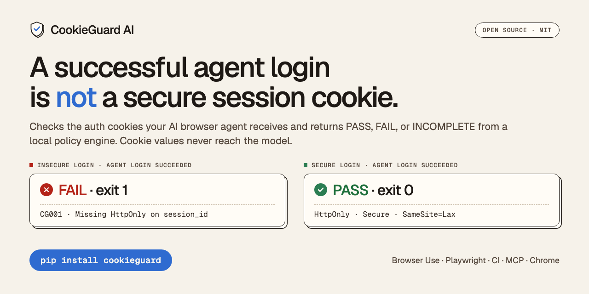
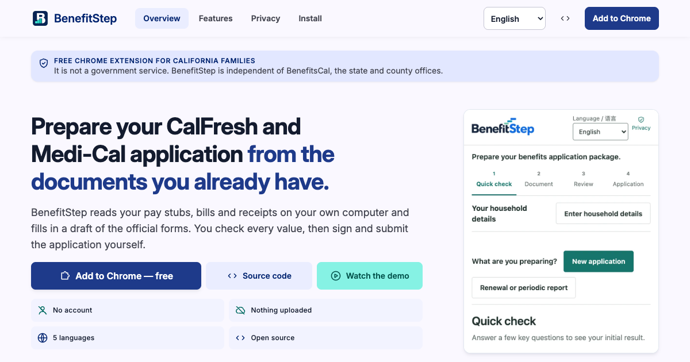
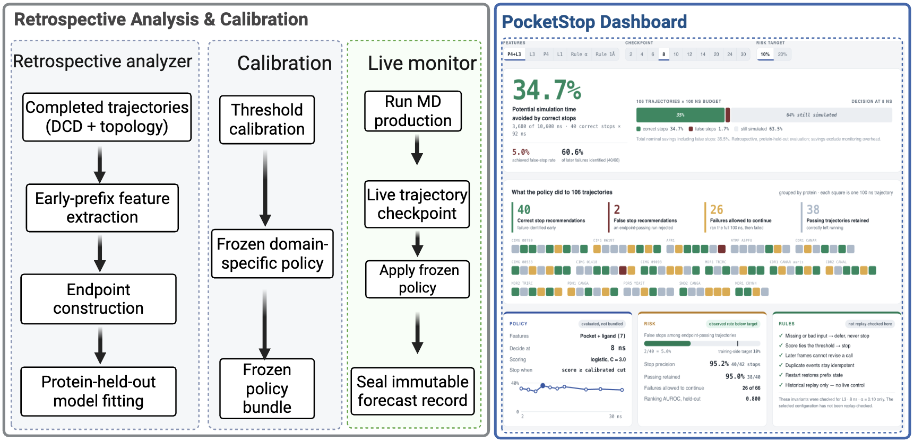
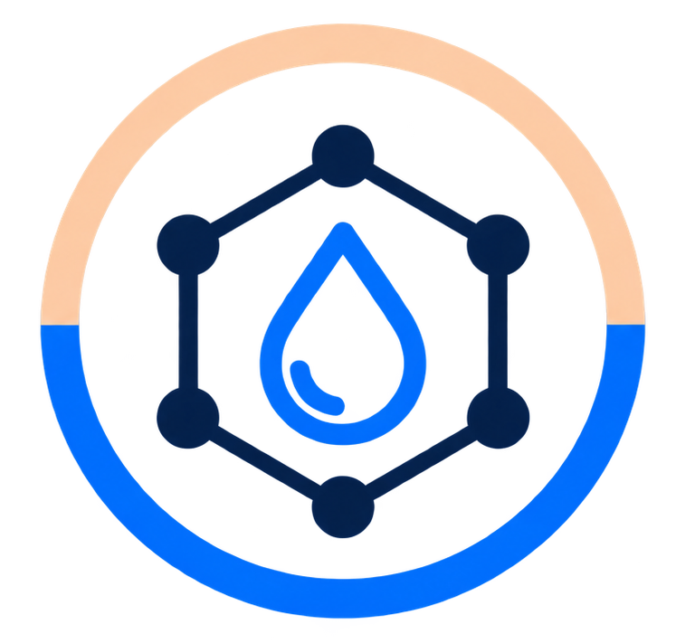

Developer tools & security
CookieGuard AI
Local authentication-cookie security checks for AI browser agents, browser extensions, and CI pipelines.
Latest GitHub releasecookieguard-v0.4.0
Youth-led · Free · Open source
Discover real software built by young developers across schools. Explore the code, find a first contribution, and build something useful together.
Discover the work
Find open-source software to try, learn from, or contribute to.
4 projects

Developer tools & security
Local authentication-cookie security checks for AI browser agents, browser extensions, and CI pipelines.
Latest GitHub releasecookieguard-v0.4.0

Civic tech & accessibility
A Chrome extension for preparing and reviewing unsigned California public-benefit application drafts locally.
Latest GitHub releaseNo stable release yet

Scientific computing & data
Risk-aware early-stopping and reproducibility tools for computational molecular-dynamics trajectories.
Latest GitHub releaseNo stable release yet

Scientific computing & data
A climate-aware research-screening tool comparing materials for atmospheric water harvesting using public experimental adsorption data.
Latest GitHub releaseNo stable release yet
Try a different search or choose another project area.
Open to collaboration
Keep your repository under your own ownership. Explore our project standards and submission process; submissions open once the maintainer-review rules are activated.